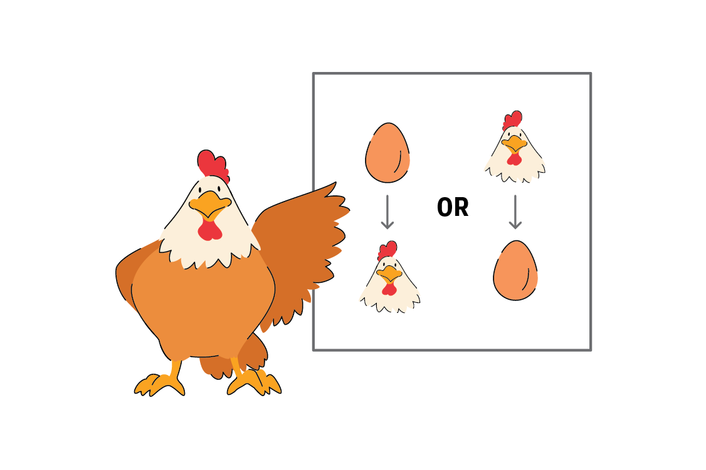

Statistics and data science are both the art and science of learning from data – they help us understand the world through methodical analysis of collected information.
Statistics and data science provide essential tools for social science researchers, regardless of specialization. Whether you study political science, economics, sociology, or another social science field, these tools enable you to:
Analyze social trends and behaviors
Measure the effects of various policies
Form conclusions based on empirical evidence rather than intuition
Statistics provides the mathematical foundations for data analysis, including research design, information synthesis, and hypothesis testing. Data science extends these capabilities by combining statistics with programming skills and domain knowledge, enabling work with complex datasets.
In today’s digital era, with rapidly expanding available data, these analytical competencies have become essential for contemporary researchers and social science specialists.
Note
In social sciences, data science constitutes a set of methods for solving complex research problems – combining statistical approaches, computational tools, and specialized knowledge to more effectively analyze social processes.
1.2 The Relationship Between Statistics and Data Science
Rather than viewing statistics and data science as separate disciplines, it’s more helpful to see them as complementary approaches within the spectrum of data analysis methods. Data science can be understood as a contemporary extension of traditional statistics that has evolved in response to:
New technological possibilities
The need to analyze increasingly complex social data
The availability of computational tools for handling large datasets
1.3 Basic Concepts in Data Science and Statistics
1.3.1 Data and Populations
Data: Information collected during research – this includes survey responses, experimental results, economic indicators, social media content, or any other measurable observations.
Understanding Different Types of Data Sets and Their Formats
1.3.2 Cross-sectional Data
Observations collected at a single point in time across multiple entities/individuals:
Individual
Age
Income
Education
1
25
50000
Bachelor’s
2
35
75000
Master’s
3
45
90000
PhD
1.3.3 Time Series Data
Observations of a single entity tracked over multiple time points:
Year
GDP (in billions)
Unemployment Rate
2018
20,580
3.9%
2019
21,433
3.7%
2020
20,933
8.1%
1.3.4 Panel Data (Longitudinal Data)
Observations of multiple entities tracked over time:
Country
Year
GDP per capita
Life Expectancy
USA
2018
62,794
78.7
USA
2019
65,118
78.8
Canada
2018
46,194
81.9
Canada
2019
46,194
82.0
1.3.5 Time-series Cross-sectional (TSCS) Data
A special case of panel data where:
Number of time points > Number of entities
Similar structure to panel data but with emphasis on temporal depth
Common in political science and economics research
1.3.6 Data Formats
1.3.6.1 Wide Format
Each row represents an entity; columns represent variables/time points:
Country
GDP_2018
GDP_2019
LE_2018
LE_2019
USA
62,794
65,118
78.7
78.8
Canada
46,194
46,194
81.9
82.0
1.3.6.2 Long Format
Each row represents a unique entity-time-variable combination:
Country
Year
Variable
Value
USA
2018
GDP per capita
62,794
USA
2019
GDP per capita
65,118
USA
2018
Life Expectancy
78.7
USA
2019
Life Expectancy
78.8
Canada
2018
GDP per capita
46,194
Canada
2019
GDP per capita
46,194
Canada
2018
Life Expectancy
81.9
Canada
2019
Life Expectancy
82.0
Note: Long format is generally preferred for:
Data manipulation in R and Python
Statistical analysis
Data visualization
Mixed-effects modeling
Repeated measures analyses
Population: The complete set of units (individuals, institutions, events) that the research concerns – the entire group about which the researcher wants to draw conclusions.
Example: In a study of voting preferences, the population consists of all citizens eligible to vote in a given country.
Sample: A subset of the population selected for study. A representative sample reflects the key characteristics of the target population in appropriate proportions.
Example: Instead of studying all eligible voters, researchers might analyze 1,500 randomly selected individuals, accounting for the appropriate distribution of age, gender, education, and region of residence.
A properly selected sample enables inference about the entire population while significantly reducing research costs and time.
Sampling: The procedure of selecting individuals from a population for investigation. An unbiased sampling method gives every individual in the population an equal chance of selection, ensuring representative results.
Essential methods of random sampling from a population:
Simple Random Sampling: Every individual has an equal probability of selection. The entire population is randomly sampled without any predetermined pattern.
Simple Random Sampling. Retrieved from: https://app.passyourmath.com/courses/theory/116/1750/26640/en
Stratified Sampling: The population is divided into distinct subgroups (strata) before random samples are drawn from each stratum proportionally.
Statistical inference: The process of drawing conclusions about a population based on data from a sample. It involves:
Calculating estimates for population parameters
Assessing the reliability of these estimates
Testing hypotheses about population characteristics
The process of using a sample to estimate a population parameter. In this example, a sample of 10 individuals found 6 who own an iPhone, yielding an estimated population proportion of 60%. The actual population proportion is 53.8%.
1.3.7 Statistical Inference: How Can a Small Sample Represent a Large Population?
When pollsters survey just 1,000 voters to predict an election with 30,000,000 voters (only 0.003% of the population), it might seem puzzling. How can such a tiny fraction tell us about the whole?
It’s similar to tasting soup. When you cook a large pot of soup and stir it thoroughly, you don’t need to eat the entire pot to know how it tastes. A single spoonful is enough—as long as the soup is well-stirred.
The Soup Analogy: A Taste of Statistics
When you taste a spoonful of soup and decide it isn’t salty enough, that’s exploratory/descriptive analysis.
If you generalize and conclude that your entire pot of soup needs salt, that’s an inference.
For your inference to be valid, the spoonful you tasted (the sample) needs to be representative of the entire pot (the population).
If the soup is not well stirred (heterogeneous population), it doesn’t matter how large a spoon you have (sample size), it will still not accurately represent the whole. If the soup is well stirred (homogeneous population), even a small spoon will suffice to test the soup.
1.3.7.1 Why Random Sampling Works
Random sampling works because of three key principles:
Equal opportunity: Every person in the population has the same chance of being selected, which prevents systematic bias.
Representative diversity: When everyone has an equal chance, you naturally tend to get people from all different groups in roughly the same proportions as they exist in the population.
Example: If 51% of voters are women, then about 51% of your random sample will likely be women (give or take some random variation).
Law of large numbers: As your sample size (n) grows, random fluctuations become less influential and your sample statistics get closer to the true population values.
Example: If you flip a fair coin 10 times, you might get 7 heads (70%). But if you flip it 1,000 times, you’re much more likely to get close to 500 heads (50%).
Without proper random sampling, you could easily end up with a biased sample. For instance, if you only surveyed people at a shopping mall during weekday mornings, you’d miss most working people and students, giving you a skewed picture of the population.
Randomness: A Fundamental Law of Nature
Randomness is not just a limitation of our knowledge—it is a fundamental part of how nature operates. It shapes reality in multiple ways:
Quantum Mechanics: At the smallest scales, nature behaves probabilistically. The Heisenberg uncertainty principle shows that we cannot precisely measure both position and momentum at the same time. When we observe a quantum system, its wave function “collapses” into a definite state, following probability rather than certainty.
Genetics & Evolution: Mutations and genetic recombination occur randomly, providing the raw material for evolution. These random changes drive adaptation and the diversity of life on Earth.
Chaos Theory: Even in systems that follow strict mathematical rules, small differences in initial conditions can lead to unpredictable outcomes (the “butterfly effect”). This makes even deterministic systems appear random over time.
Statistics & Scientific Research: Many scientific methods rely on randomness. In experiments, randomization ensures fairness and reduces bias. In data analysis, random sampling allows us to make accurate predictions about entire populations from small samples.
1.3.8 Randomness in Scientific Methodology
1.3.8.1 Randomization in Experiments
In scientific experiments, random assignment ensures that different groups are comparable, helping us determine cause-and-effect relationships. It:
set.seed(42) # Ensures reproducibilityparticipants <-1:30# 30 study participantsgroups <-c(rep("Control", 15), rep("Experimental", 15))random_assignment <-sample(groups) # Assign participants randomlyresults <-data.frame(ID = participants, Group = random_assignment)head(results) # View the first few assignments
ID Group
1 1 Experimental
2 2 Control
3 3 Control
4 4 Experimental
5 5 Control
6 6 Control
1.3.8.2 Simple Random Sampling
When researchers take a random sample, every individual in the population has an equal chance of being chosen. This ensures fair representation, allowing us to generalize findings.
Example in R:
population <-1:1000# Population of 1000 individualssample_size <-50sample_data <-sample(population, sample_size) # Draw 50 random samplessummary(sample_data) # Show basic statistics
Min. 1st Qu. Median Mean 3rd Qu. Max.
3.0 249.2 405.5 473.7 719.8 993.0
Understanding randomness changes how we view reality. Instead of a fully predictable world, we recognize that uncertainty is built into nature itself. This shift has profound implications for science, philosophy, and decision-making. By embracing randomness, we develop more accurate models, reliable experiments, and better ways to understand complexity.
1.4Population Parameters and Statistical Estimation
1.4.1Population Parameters
A population parameter (\theta) is a numerical value that describes a specific characteristic of an entire population. These parameters are typically unknown and are estimated using sample data.
1.4.1.1Common Population Parameters
\mu (Population Mean): The average value of the population.
\sigma^2 (Population Variance): The average squared deviation from the mean.
\sigma (Population Standard Deviation): The square root of the variance, measuring the spread of the population.
p (Population Proportion): The fraction of the population that exhibits a specific characteristic.
Since studying an entire population is often impractical, we rely on samples to estimate these parameters.
1.5 Statistical Estimation Concepts
1.5.1 Population Parameters vs. Sample Statistics
In statistics, we often want to learn about an entire population, but we usually can’t measure everyone. Instead, we take a sample and compute values from it. These sample-based values help us estimate population parameters.
Tip
Key Difference:
- A population parameter (denoted by \theta) is a fixed but unknown value that describes the entire population.
- A sample statistic (denoted by \hat{\theta} when used for estimation) is calculated from sample data and used to estimate the population parameter.
1.5.1.1 Examples of Population Parameters and Sample Statistics
Concept
Population Parameter (Unknown, Fixed)
Sample Statistic (Computed from Sample Data)
Mean (average)
\theta = \mu (true population mean)
\hat{\theta} = \bar{x} (sample mean)
Variance
\theta = \sigma^2 (true population variance)
\hat{\theta} = s^2 (sample variance)
Proportion
\theta = p (true proportion)
\hat{\theta} = \hat{p} (sample proportion)
Since we cannot observe\theta directly, we use a sample statistic (like \hat{\theta}) to estimate it.
1.5.2 What is an Estimand?
An estimand is the specific population parameter \theta that we aim to estimate. It represents the unknown quantity in the population that we are trying to determine.
Note
Example:
- If we want to know the average height of all adults in a country, the true population mean (\theta = \mu) is the estimand.
- If we want to estimate the proportion of voters supporting a candidate, the true population proportion (\theta = p) is the estimand.
1.5.3 What is an Estimator?
An estimator is a rule, formula, or function that we apply to a sample to estimate the population parameter \theta.
Tip
Key Idea:
- An estimator is a procedure, not a specific number!
- Since different samples give different results, an estimator is a random variable, meaning its value depends on the sample chosen.
1.5.3.1 Notation
\theta = True population parameter (unknown)
\hat{\theta} = Estimator (a function of sample data)
1.5.3.2 Common Estimators
Sample Mean (Estimator of \mu):
\hat{\theta} = \bar{x} = \frac{1}{n} \sum_{i=1}^{n} x_i
Sample Proportion (Estimator of p):
\hat{\theta} = \hat{p} = \frac{x}{n}
1.5.4 What is an Estimate?
An estimate is the specific numerical value obtained when an estimator \hat{\theta} is applied to a sample.
1.5.4.1 Example: Estimating the Average Height of Adults
Estimand: The true population mean height (\theta = \mu) (unknown).
Estimator: The formula for the sample mean \hat{\theta} = \bar{x} = \frac{1}{n} \sum x_i.
Estimate: A specific number, like 173.5 cm, obtained from one sample.
1.5.5 What Makes a Good Estimator?
When we use data to estimate something—like the average height of students in a school—we want our estimate to be as accurate and reliable as possible. A good estimator should have these four key properties:
1.5.5.1 1️⃣ Unbiasedness: No Systematic Error
A good estimator should, on average, get the right answer! If we take many different samples and compute their estimates, the average of all these estimates should be equal to the true value we’re trying to estimate (\theta).
Mathematically, this means:
E(\hat{\theta}) = \theta
Here, E(\hat{\theta}) (called the expectation operator) represents the average value of \hat{\theta} over many samples. In simple terms, if we repeated our study over and over, the long-run average of our estimates should be the true value \theta. This ensures our estimator isn’t systematically too high or too low—it doesn’t have built-in bias.
1.5.5.2 2️⃣ Efficiency: As Little Variability as Possible
Even if an estimator is unbiased, it can still be all over the place. A good estimator is one that has the least variability—it tends to give values close together rather than being spread out. The less it jumps around, the more trustworthy it is.
1.5.5.3 3️⃣ Consistency: More Data = Better Accuracy
A consistent estimator gets closer to the true value as we collect more data. If we take a tiny sample, our estimate might be way off, but if we collect more and more data, our estimate should settle down near the true value \theta.
1.5.5.4 4️⃣ Sufficiency: Uses All the Information in the Data
A sufficient estimator makes the best possible use of the data. It doesn’t waste information or leave anything important out. If we have all the numbers from our sample, a sufficient estimator ensures we’re squeezing out every useful bit of insight.
1.5.6 Why Do Estimates Vary? (The Sampling Distribution)
If we take different samples from a population, we’ll get different estimates. To understand this variation, we look at something called the sampling distribution—which tells us how our estimates behave across many samples.
1.5.6.1 Key Ideas About Sampling Distributions
Every sample gives a different estimate—If two people take separate surveys, they’ll probably get slightly different results.
These differences follow a pattern—The sampling distribution describes how estimates are spread out.
Bigger samples give more stable estimates—Larger samples tend to produce estimates that are closer to the true value.
Understanding sampling distributions helps us measure uncertainty—That’s why we use them for confidence intervals and hypothesis tests.
1.5.6.2 Example: The Sample Mean
Imagine we take many samples from a population and calculate the average each time. These sample means will form a sampling distribution, centered around the true population mean \mu.
Mathematically, the sample mean is:
\hat{\theta} = \bar{x} = \frac{1}{n} \sum_{i=1}^{n} x_i
where x_1, x_2, ..., x_n are the sample values.
This tells us that if we keep taking samples, the average of our sample means will be close to the real population mean \mu.
The Normal Distribution - The Bell Curve
Note
The normal distribution, often called the “bell curve,” is one of the most important concepts in statistics. It describes how data is spread out and appears everywhere in the real world—like in people’s heights, test scores, or even measurement errors. The curve is shaped like a bell, with most of the data clustered around the middle and less data as you move away from the center.
1.5.7 What Defines the Bell Curve?
The bell curve is defined by two key numbers: 1. The Mean (\mu): This is the average value, and it’s where the center of the bell sits. 2. The Standard Deviation (\sigma): This tells you how spread out the data is. A small standard deviation means the data is close to the mean, while a large one means the data is more spread out.
1.5.8 Why Is It Important?
The normal distribution is super useful because:
The 68-95-99.7 Rule:
About 68% of the data falls within 1 standard deviation of the mean.
About 95% falls within 2 standard deviations.
About 99.7% falls within 3 standard deviations.
The Central Limit Theorem:
Imagine you have some data that doesn’t look like a typical bell curve (e.g., it might be irregularly scattered). If you start taking many small samples from this data and calculate their averages each time, those averages will start to form a bell curve—even if the original data didn’t look like one!
In other words:
No matter how your data looks at first,
If you take averages from many small groups of that data,
Those averages will create a bell curve when you collect enough of them.
This is why the normal distribution is so important—even if something doesn’t seem “normal” at first glance, the averages of that thing often behave like a bell curve.
Statistical Tools: Many statistical tests and methods rely on the normal distribution to make predictions and draw conclusions.
1.5.9 Let’s See It in Action!
Here’s how you can create and visualize a bell curve using R:
# Load necessary librarylibrary(ggplot2)# Define the mean and standard deviationmean <-0sd <-1# Create a sequence of x valuesx <-seq(-4, 4, length.out =1000)# Calculate the corresponding y values (probability density)y <-dnorm(x, mean, sd)# Plot the normal curveggplot(data.frame(x, y), aes(x, y)) +geom_line(color ="blue", linewidth =1) +labs(title ="The Normal Distribution (Bell Curve)",x ="Values",y ="Probability Density") +theme_minimal()
This code generates a smooth bell curve centered at 0 with a standard deviation of 1. You can tweak the mean and sd values to see how the curve changes!
1.5.10Types of Data and Variables
Data is the foundation of statistical analysis. Understanding its types and characteristics is essential.
1.5.10.1Sources of Data
Primary Data: Collected directly for a specific research purpose (e.g., surveys, experiments).
Secondary Data: Obtained from existing sources (e.g., databases, government records).
1.5.10.2Variables and Constants
Variables: Characteristics that can take on different values in a dataset.
Constants: Values that remain unchanged throughout the analysis.
1.5.10.3Classification of Variables
Quantitative Variables (represent quantities or measurements):
Continuous: Can take any value within a range (e.g., height, temperature).
Discrete: Take specific, often integer values (e.g., number of children, errors).
Qualitative Variables (represent categories or qualities):
Nominal: Categories with no inherent order (e.g., blood type, gender).
Ordinal: Categories with a natural order (e.g., education level, satisfaction ratings).
1.6 Statistical Inference
Statistical inference is the process of drawing conclusions about a population based on sample data. It encompasses two main areas:
1.6.1 Estimation
Estimation is the process of using sample data to estimate unknown population parameters. We distinguish:
Point estimation: Providing a single value as the best approximation of the parameter
Interval estimation: Constructing a confidence interval that indicates the range of possible parameter values consistent with our data
Example of a confidence interval: “The 95% confidence interval for the average height of adults is (173 cm, 175 cm).”
Correct interpretation of confidence interval: If we were to repeatedly take samples from the same population and construct a 95% confidence interval for each sample using the same method, about 95% of these intervals would contain the true population parameter value.
Incorrect interpretation: “There is a 95% chance that the true mean is in the interval (173 cm, 175 cm)” – this is incorrect because the population parameter is a fixed (though unknown) value, not a random variable.
1.6.2 Hypothesis Testing
Hypothesis testing is a way to check if a claim about a group (or population) is likely true or not. It’s like being a detective: you gather evidence (data) and decide whether the evidence supports your claim.
1.6.3 Example: Testing if a Coin is Fair
Let’s say you want to check if a coin is fair (i.e., has an equal chance of landing heads or tails).
1.6.3.1 Step 1: Ask the Research Question
Question: Is the coin fair? (Is the probability of heads = 0.5?)
1.6.3.2 Step 2: Set Up Two Hypotheses
Null Hypothesis (H₀): The coin is fair. (Probability of heads = 0.5)
Alternative Hypothesis (H₁): The coin is not fair. (Probability of heads ≠ 0.5)
Think of the null hypothesis as the “default” or “innocent until proven guilty” position. The alternative is what you’re trying to prove.
1.6.3.3 Step 3: Collect Data
You flip the coin 100 times and get 65 heads.
1.6.3.4 Step 4: Analyze the Data
If the coin were fair, you’d expect around 50 heads in 100 flips.
The number of heads should follow a binomial distribution (a fancy term for the pattern of outcomes you’d expect from repeated coin flips).
The standard deviation (a measure of how much the results can vary) is 5.
Getting 65 heads is 3 standard deviations away from the expected 50 heads. This is unusual!
1.6.3.5 Step 5: Calculate the p-value
The p-value is the probability of getting 65 or more heads (or a result this extreme) if the coin were fair.
In this case, the p-value is very small (less than 0.01), meaning it’s very unlikely to happen by chance.
1.6.3.6 Step 6: Make a Decision
If the p-value is small (usually less than 0.05), we reject the null hypothesis.
Here, the p-value is very small, so we conclude the coin is not fair.
1.6.4 General Steps for Hypothesis Testing
Formulate Hypotheses:
Null Hypothesis (H₀): The default or “no effect” claim.
Alternative Hypothesis (H₁): The claim you’re testing.
Choose a Significance Level (α):
This is the threshold for deciding if the p-value is small enough to reject H₀. Common choices are 0.05 or 0.01.
Collect Data:
Gather evidence (e.g., flip a coin 100 times).
Calculate the Test Statistic and p-value:
The test statistic measures how far your data is from what H₀ predicts.
The p-value tells you how likely it is to see your data (or something more extreme) if H₀ is true.
Make a Decision:
If p-value < α, reject H₀ and accept H₁.
If p-value ≥ α, do not reject H₀ (but this doesn’t prove H₀ is true).
1.6.5 Intuition Behind Hypothesis Testing
Think of hypothesis testing like a court trial:
Null Hypothesis (H₀): The defendant is innocent.
Alternative Hypothesis (H₁): The defendant is guilty.
Data: The evidence presented in court.
p-value: How strong the evidence is against the defendant.
Significance Level (α): The standard of proof needed to convict.
If the evidence is strong enough (p-value < α), we reject H₀ (convict the defendant). If not, we don’t reject H₀ (but we don’t prove innocence either).
1.6.6 Common Mistakes with p-values
The p-value is NOT the probability that H₀ is true.
It’s the probability of seeing your data (or something more extreme) if H₀ were true.
The p-value is NOT the chance of making a mistake.
It doesn’t tell you the probability of being wrong when rejecting H₀.
Failing to reject H₀ does NOT prove it’s true.
It just means there’s not enough evidence to reject it.
A small p-value does NOT mean the result is important.
It only means the result is statistically significant. The effect might still be tiny in real life.
p-values depend on sample size.
With very large samples, even small differences can look statistically significant.
1.6.7 Types of Errors in Hypothesis Testing
Type I Error (False Positive):
Rejecting H₀ when it’s actually true.
Example: Convicting an innocent person.
Probability of this error = α (the significance level).
Type II Error (False Negative):
Failing to reject H₀ when it’s actually false.
Example: Letting a guilty person go free.
Probability of this error = β.
Power of the Test (1 - β):
The probability of correctly rejecting H₀ when it’s false.
Power increases with larger sample sizes and bigger effect sizes.
1.6.8 Key Takeaways
Hypothesis testing helps you decide if your data supports a claim.
The p-value tells you how surprising your data is, assuming H₀ is true.
Always interpret p-values carefully and avoid common mistakes.
A statistical model is a mathematical framework that represents the relationships between variables and the structure of data. It helps describe the data-generating process (DGP) and enables us to make inferences about unknown parameters.
Components of a Statistical Model
A complete statistical model consists of the following elements:
Functional form: The mathematical structure that defines the relationship between variables (e.g., linear, quadratic, exponential).
Variables:
Dependent variable(s): The outcome we aim to predict or explain.
Independent/explanatory variables: The factors that may influence the dependent variable.
Parameters: Unknown quantities that we estimate from the data (e.g., regression coefficients like \beta_0 and \beta_1).
Random component: The error term (\epsilon) that accounts for unexplained variability in the data.
Probability distribution assumptions: Assumptions about the distribution of the random component (e.g., normality, homoscedasticity).
Example of a Linear Regression Model:
y = \beta_0 + \beta_1x + \epsilon, \quad \text{where} \quad \epsilon \sim N(0, \sigma^2)
In this model:
\beta_0 (intercept) and \beta_1 (slope) are parameters to be estimated.
\epsilon represents the random error term, capturing variability not explained by the model.
The error term is assumed to follow a normal distribution with a mean of 0 and variance \sigma^2.
1.7.1 Causal vs. Predictive Inference
In statistical modelling, there are two primary goals:
Causal Inference:
Goal: Determine whether a change in variable Xcauses a change in variable Y.
Requirements: Strong assumptions or specialized research designs (e.g., randomized controlled trials, instrumental variables).
Application: Used to predict the effects of interventions or policy changes.
Example: Does increasing the minimum wage (X) cause a reduction in employment (Y)?
Predictive Inference:
Goal: Predict the values of Y based on X.
Requirements: No need to assume a causal relationship between variables.
Focus: Maximizing prediction accuracy, often using machine learning techniques.
Example: Predicting house prices (Y) based on features like size, location, and number of bedrooms (X).
Warning: Correlation ≠ Causation
A spurious relationship (or spurious correlation) occurs when two variables are statistically associated but not causally related. This can happen due to:
Confounding: A third variable influences both X and Y.
Example: Ice cream sales (X) and drowning incidents (Y) are correlated because both increase in summer (confounder: temperature).
Reverse Causality: Y affects X, not the other way around.
Example: Higher crime rates (Y) lead to more police presence (X), not vice versa.
Chance: Random correlations that occur by coincidence.
Example: A correlation between the number of pirates and global temperature (purely coincidental).
1.7.2 Challenges of Causal Inference
The fundamental problem of causal inference is the impossibility of observing counterfactuals (alternative scenarios). For a given unit, we can observe only one potential outcome.
The fundamental problem of causal inference: We can think of causal inference as a PREDICTION problem. How can we predict the counterfactual given that we never observe it?
Example:
We observe a person who completed college and earns $8,000 per month
We cannot observe how much the same person would earn if they had not completed college
Causal methods attempt to solve this problem through, e.g.:
Randomized experiments
Instrumental variables
Matching methods
Regression discontinuity analysis
Difference-in-differences
Common problems in causal inference:
Confounding bias: drinking the night before is a common cause of sleeping with shoes on and waking up with a headache

Reverse causality
1.8 Understanding Statistical Error
When using a sample to infer information about a population, statistical errors inevitably arise:
Statistical error is the difference between a sample estimate and the true population value.
These errors can affect research validity and reliability. Understanding them is crucial for designing robust studies, analyzing data accurately, and drawing valid conclusions.
1.9 Types of Statistical Errors
1.9.1 Sampling Errors
1.9.1.1 Random Sampling Errors
Definition: Natural variability in sample estimates due to random selection.
Example: The average height of 30 randomly selected university students fluctuates across different samples.
Properties:
Unavoidable but manageable
Decrease with larger sample sizes
Quantified using the margin of error
Follow predictable statistical patterns
1.9.1.2 Systematic Sampling Errors (Bias)
Selection bias: Sample does not represent the target population.
Example: A phone survey reaches only landline users, excluding cell phone users.
Undercoverage: Systematic exclusion of groups.
Example: A campus survey conducted during daytime misses evening students.
Self-selection bias: Results skewed by participant choice.
Example: Customer satisfaction surveys filled out mainly by those with strong opinions.
Non-response bias: Certain groups are less likely to respond.
Example: Busy individuals skipping surveys, leading to overrepresentation of those with more free time.
1.9.2 Measurement Errors
1.9.2.1 Random Measurement Errors
Definition: Unpredictable fluctuations in measurements due to chance variability.
Examples:
Slight variations in blood pressure readings due to a shaky hand.
Small environmental fluctuations affecting instrument readings.
Minor inconsistencies in repeated measurements.
Key Property: These errors tend to cancel out over multiple measurements.
Consider practical significance, not just statistical significance.
Account for potential dropouts or missing data.
Pre-registration
Define analysis plans before examining data.
Specify primary outcomes and methods.
Document any deviations from the plan.
Transparency
Share data and methods openly.
Provide access to raw data when possible.
Clearly document analytical decisions.
Replication
Encourage independent verification.
Conduct internal replications.
Support external replication efforts.
Ongoing education
Stay informed on best practices.
Follow field-specific guidelines.
Engage with methodological advancements.
By understanding and mitigating statistical errors, researchers can ensure their findings are reliable, reducing the risk of flawed conclusions in fields like medicine, policy, education, and business.
1.11 Appendices: Additional Topics in Statistics and Data Science (*)
1.12 Appendix A: R for Social Science Data Analysis
R offers powerful capabilities for social science research, from data manipulation to advanced statistical modeling.
Click to show/hide R code
library(tidyverse)
── Attaching core tidyverse packages ──────────────────────── tidyverse 2.0.0 ──
✔ dplyr 1.1.4 ✔ readr 2.1.5
✔ forcats 1.0.0 ✔ stringr 1.5.1
✔ lubridate 1.9.3 ✔ tibble 3.2.1
✔ purrr 1.0.2 ✔ tidyr 1.3.1
── Conflicts ────────────────────────────────────────── tidyverse_conflicts() ──
✖ dplyr::filter() masks stats::filter()
✖ dplyr::lag() masks stats::lag()
ℹ Use the conflicted package (<http://conflicted.r-lib.org/>) to force all conflicts to become errors
Click to show/hide R code
# Set seed for reproducibilityset.seed(42)# Generate example data with a Simpson's Paradoxn <-1000data <-tibble(age_group =sample(c("Young", "Middle", "Old"), n, replace =TRUE, prob =c(0.3, 0.4, 0.3)),education_years =case_when( age_group =="Young"~rnorm(n, mean =10, sd =1), age_group =="Middle"~rnorm(n, mean =13, sd =1), age_group =="Old"~rnorm(n, mean =16, sd =1) ),income =case_when( age_group =="Young"~70000+1000* education_years +rnorm(n, mean =0, sd =5000), age_group =="Middle"~50000+1000* education_years +rnorm(n, mean =0, sd =5000), age_group =="Old"~30000+1000* education_years +rnorm(n, mean =0, sd =5000) ))# Basic data summarysummary(data)
age_group education_years income
Length:1000 Min. : 6.628 Min. :34068
Class :character 1st Qu.:10.913 1st Qu.:51508
Mode :character Median :13.004 Median :63376
Mean :12.986 Mean :63307
3rd Qu.:14.934 3rd Qu.:75023
Max. :18.861 Max. :96620
education_years income
education_years 1.0000000 -0.8152477
income -0.8152477 1.0000000
Click to show/hide R code
# Overall trend (Simpson's Paradox)overall_plot <-ggplot(data, aes(x = education_years, y = income)) +geom_point(alpha =0.5) +geom_smooth(method ="lm", se =FALSE, color ="red") +labs(title ="Overall Relationship between Education and Income",subtitle ="Simpson's Paradox: Appears negative",x ="Years of Education", y ="Income") +theme_minimal()# Trend by age group (Resolving Simpson's Paradox)grouped_plot <-ggplot(data, aes(x = education_years, y = income, color = age_group)) +geom_point(alpha =0.5) +geom_smooth(method ="lm", se =FALSE) +labs(title ="Relationship between Education and Income by Age Group",subtitle ="Resolving Simpson's Paradox: Positive relationship within groups",x ="Years of Education", y ="Income") +theme_minimal()# Print resultsprint(overall_plot)
`geom_smooth()` using formula = 'y ~ x'
Click to show/hide R code
print(grouped_plot)
`geom_smooth()` using formula = 'y ~ x'
This example demonstrates Simpson’s Paradox, where the overall relationship between education and income appears negative, but when grouped by age, the relationship within each group is positive. This illustrates how critical it is to consider confounding variables in your analysis.
1.13 Appendix B: Causal Inference vs. Observational Studies
Understanding the relationship between variables is crucial in social sciences. Two key approaches are causal inference and observational studies, each with distinct strengths and limitations.
1.13.1 Causal Inference
Aims to establish cause-and-effect relationships
Often involves experimental designs or advanced statistical techniques
Seeks to answer “What if?” questions and determine the impact of interventions
Correlation: Measures the strength and direction of a relationship between variables
Causation: Indicates that changes in one variable directly cause changes in another
While strong correlations can suggest potential causal links, additional evidence and rigorous methods are required to establish causality.
1.13.3 Challenges in Establishing Causality
Confounding variables: Unmeasured factors that affect both the presumed cause and effect
Reverse causality: The presumed effect might actually be causing the presumed cause
Selection bias: Non-random selection of subjects into study groups
1.13.4 Methods to Strengthen Causal Claims
Randomized controlled trials (when ethical and feasible)
Natural experiments or quasi-experimental designs
Propensity score matching
Difference-in-differences analysis
Instrumental variable approaches
Directed acyclic graphs (DAGs) for visualizing causal relationships
Understanding these distinctions is crucial in social sciences, where ethical considerations often limit experimental manipulation.
1.14 Appendix C: Understanding Spurious Correlations, Confounders, and Colliders
These concepts are essential for avoiding misinterpretations in statistical analysis. Let’s explore them with R examples.
Load required libraries
library(tidyverse)library(viridis)set.seed(123) # for reproducibility
1.14.1 Spurious Correlations
Spurious correlations are relationships between variables that appear to be causal but are actually coincidental or caused by an unseen third factor.
Example: Ice Cream Sales and Drowning Incidents
R code for spurious correlation example
# Create datasetn <-100spurious_data <-tibble(temperature =rnorm(n, mean =25, sd =5),ice_cream_sales =100+5* temperature +rnorm(n, sd =10),drowning_incidents =1+0.5* temperature +rnorm(n, sd =2))# Plot the apparent correlationp1 <-ggplot(spurious_data, aes(x = ice_cream_sales, y = drowning_incidents)) +geom_point(alpha =0.7) +geom_smooth(method ="lm", se =FALSE, color ="#0072B2") +labs(title ="Spurious Correlation: Ice Cream Sales vs. Drowning",x ="Ice Cream Sales", y ="Drowning Incidents") +theme_minimal()# Show the common causep2 <-ggplot(spurious_data, aes(x = temperature)) +geom_point(aes(y = ice_cream_sales), color ="#D55E00", alpha =0.7) +geom_point(aes(y = drowning_incidents *10), color ="#0072B2", alpha =0.7) +geom_smooth(aes(y = ice_cream_sales), method ="lm", se =FALSE, color ="#D55E00") +geom_smooth(aes(y = drowning_incidents *10), method ="lm", se =FALSE, color ="#0072B2") +scale_y_continuous(name ="Ice Cream Sales",sec.axis =sec_axis(~./10, name ="Drowning Incidents") ) +labs(title ="Temperature as the Common Cause",x ="Temperature (°C)") +theme_minimal() +theme(axis.title.y.left =element_text(color ="#D55E00"),axis.title.y.right =element_text(color ="#0072B2") )# Calculate correlationcor_value <-cor(spurious_data$ice_cream_sales, spurious_data$drowning_incidents)# Display plotsprint(p1)
`geom_smooth()` using formula = 'y ~ x'
R code for spurious correlation example
print(p2)
`geom_smooth()` using formula = 'y ~ x'
`geom_smooth()` using formula = 'y ~ x'
R code for spurious correlation example
cat("Correlation between ice cream sales and drowning incidents:", round(cor_value, 3))
Correlation between ice cream sales and drowning incidents: 0.68
In this example, temperature is the common cause (confounder) that influences both ice cream sales and drowning incidents. When we plot them against each other, they appear correlated (r ≈ 0.5), but this is spurious. The relationship disappears when we control for temperature.
1.14.2 Confounders
A confounder is a variable that influences both the dependent variable and independent variable, causing a spurious association.
Example: Education, Income, and Age
R code for confounder example
# Create datasetn <-1000confounder_data <-tibble(age =runif(n, 25, 65),education =round(10+0.1* age +rnorm(n, sd =2)),income =20000+1000* education +500* age +rnorm(n, sd =5000))# Create age groups for visualizationconfounder_data <- confounder_data %>%mutate(age_group =cut(age, breaks =3, labels =c("Young", "Middle", "Older")))# Models with and without controlling for the confoundermodel_naive <-lm(income ~ education, data = confounder_data)model_adjusted <-lm(income ~ education + age, data = confounder_data)# Visualizationggplot(confounder_data, aes(x = education, y = income)) +geom_point(aes(color = age), alpha =0.5) +geom_smooth(method ="lm", se =FALSE, color ="black", linewidth =1.2) +geom_smooth(aes(group = age_group, color =as.numeric(age_group)), method ="lm", se =FALSE, linewidth =1) +scale_color_viridis_c(name ="Age", breaks =c(30, 45, 60), labels =c("Young", "Middle", "Older")) +labs(title ="Education vs Income, Confounded by Age",subtitle =paste("Without controlling for age: effect =", round(coef(model_naive)["education"], 1),"| With age control: effect =", round(coef(model_adjusted)["education"], 1)),x ="Years of Education", y ="Income") +theme_minimal()
`geom_smooth()` using formula = 'y ~ x'
`geom_smooth()` using formula = 'y ~ x'
In this example, age is a confounder in the relationship between education and income. Without controlling for age, we overestimate the effect of education on income (the black line). When we examine the relationship within specific age groups (colored lines), we see a more accurate representation of the true effect.
1.14.3 Colliders
A collider is a variable that is influenced by both the independent variable and the dependent variable. Controlling for a collider can introduce a spurious correlation.
Example: Job Satisfaction, Salary, and Work-Life Balance
R code for collider example
# Create datasetn <-1000collider_data <-tibble(job_satisfaction =rnorm(n),salary =rnorm(n),# Both job satisfaction and salary negatively affect work-life balancework_life_balance =-0.5* job_satisfaction -0.5* salary +rnorm(n, sd =0.5))# Without controlling for work-life balancemodel_correct <-lm(salary ~ job_satisfaction, data = collider_data)# Incorrectly controlling for the collidermodel_collider <-lm(salary ~ job_satisfaction + work_life_balance, data = collider_data)# Visualizationp <-ggplot(collider_data, aes(x = job_satisfaction, y = salary, color = work_life_balance)) +geom_point(alpha =0.5) +geom_smooth(method ="lm", se =FALSE, color ="black") +scale_color_viridis_c(name ="Work-Life\nBalance") +labs(title ="Job Satisfaction vs Salary, with Work-Life Balance as Collider",subtitle =paste("Without controlling: correlation =", round(coef(model_correct)["job_satisfaction"], 3),"| With control: correlation =", round(coef(model_collider)["job_satisfaction"], 3)),x ="Job Satisfaction", y ="Salary") +theme_minimal()print(p)
`geom_smooth()` using formula = 'y ~ x'
In this example, there’s no inherent relationship between job satisfaction and salary (the black line shows near-zero correlation). However, both variables negatively impact work-life balance. If we control for work-life balance (the collider), we introduce a positive correlation between job satisfaction and salary that doesn’t actually exist.
1.14.4 Simpson’s Paradox
Simpson’s paradox occurs when a trend appears in different groups of data but disappears or reverses when these groups are combined.
Example: Treatment Effectiveness Across Age Groups
R code for Simpson’s paradox example
# Create example datasetset.seed(123)n <-1000simpson_data <-tibble(age_group =sample(c("Young", "Older"), n, replace =TRUE, prob =c(0.7, 0.3)),treatment =sample(c("Treatment A", "Treatment B"), n, replace =TRUE,prob =c(0.5, 0.5))) %>%mutate(# Different recovery rates based on age and treatmentrecovery_prob =case_when( age_group =="Young"& treatment =="Treatment A"~0.70, age_group =="Young"& treatment =="Treatment B"~0.80, age_group =="Older"& treatment =="Treatment A"~0.50, age_group =="Older"& treatment =="Treatment B"~0.40,TRUE~0 ),# More older people get Treatment Atreatment =if_else( age_group =="Older"&runif(n) <0.7, "Treatment A", treatment ),# Generate recovery outcomesrecovered =rbinom(n, 1, recovery_prob) )# Aggregate dataoverall_rates <- simpson_data %>%group_by(treatment) %>%summarize(total_patients =n(),recovered_patients =sum(recovered),recovery_rate =mean(recovered) )by_age_rates <- simpson_data %>%group_by(treatment, age_group) %>%summarize(total_patients =n(),recovered_patients =sum(recovered),recovery_rate =mean(recovered) )
`summarise()` has grouped output by 'treatment'. You can override using the
`.groups` argument.
R code for Simpson’s paradox example
# Create visualizationoverall_plot <-ggplot(overall_rates, aes(x = treatment, y = recovery_rate, fill = treatment)) +geom_col() +geom_text(aes(label =paste0(round(recovery_rate*100, 1), "%")), vjust =-0.5) +scale_y_continuous(labels = scales::percent, limits =c(0, 0.8)) +labs(title ="Overall Recovery Rates",subtitle ="Simpson's Paradox: Treatment B appears worse overall",x ="", y ="Recovery Rate") +theme_minimal() +theme(legend.position ="none")by_age_plot <-ggplot(by_age_rates, aes(x = treatment, y = recovery_rate, fill = treatment)) +geom_col() +geom_text(aes(label =paste0(round(recovery_rate*100, 1), "%")), vjust =-0.5) +scale_y_continuous(labels = scales::percent, limits =c(0, 0.8)) +labs(title ="Recovery Rates by Age Group",subtitle ="Within each age group, Treatment B is actually better",x ="", y ="Recovery Rate") +facet_wrap(~age_group) +theme_minimal() +theme(legend.position ="none")# Display tables and plotsknitr::kable(overall_rates, caption ="Overall Recovery Rates by Treatment")
Overall Recovery Rates by Treatment
treatment
total_patients
recovered_patients
recovery_rate
Treatment A
594
356
0.5993266
Treatment B
406
297
0.7315271
R code for Simpson’s paradox example
knitr::kable(by_age_rates, caption ="Recovery Rates by Treatment and Age Group")
Recovery Rates by Treatment and Age Group
treatment
age_group
total_patients
recovered_patients
recovery_rate
Treatment A
Older
240
116
0.4833333
Treatment A
Young
354
240
0.6779661
Treatment B
Older
55
23
0.4181818
Treatment B
Young
351
274
0.7806268
R code for Simpson’s paradox example
print(overall_plot)
R code for Simpson’s paradox example
print(by_age_plot)
Simpson’s paradox is occurring here because:
Within each age group: Treatment B has a higher recovery rate than Treatment A
Overall: Treatment A appears to have a higher recovery rate than Treatment B
This paradox happens because: - Treatment A is given more frequently to older patients - Older patients have lower recovery rates regardless of treatment - This skews the overall average to make Treatment A look better, even though Treatment B is better for both young and older patients
1.14.5 Directed Acyclic Graphs (DAGs)
DAGs are powerful tools for visualizing causal relationships and identifying potential biases in statistical analyses.
R code for DAG examples
# Try to load dagitty and ggdag if availableif (requireNamespace("dagitty", quietly =TRUE) &&requireNamespace("ggdag", quietly =TRUE)) {library(dagitty)library(ggdag)# Example 1: Confounder confounder_dag <-dagitty('dag { X -> Y Z -> X Z -> Y }')# Example 2: Collider collider_dag <-dagitty('dag { X -> Z Y -> Z X -- Y [unobserved] }')# Example 3: Simpson's Paradox simpson_dag <-dagitty('dag { Treatment -> Recovery Age -> Treatment Age -> Recovery }')# Plot the DAGs p1 <-ggdag(confounder_dag) +theme_dag() +labs(title ="Confounder (Z)") p2 <-ggdag(collider_dag) +theme_dag() +labs(title ="Collider (Z)") p3 <-ggdag(simpson_dag) +theme_dag() +labs(title ="Simpson's Paradox Structure")print(p1)print(p2)print(p3)} else {cat("DAG visualization packages not installed. Install dagitty and ggdag packages for these examples.")}
Attaching package: 'ggdag'
The following object is masked from 'package:stats':
filter
DAGs help us visualize different causal structures:
Confounder: A variable (Z) that affects both the exposure (X) and outcome (Y)
Collider: A variable (Z) that is affected by both the exposure (X) and another variable (Y)
Simpson’s Paradox: Often involves a confounder that influences both the treatment/exposure and the outcome
Understanding these structures helps us decide which variables to control for in our analyses and which to leave out.
1.15 Appendix D: Models in Science: From Deterministic to Stochastic
Models are essential tools in scientific research, helping scientists to represent, understand, and predict complex phenomena.
1.15.1 Types of Models
1.15.1.1 Mathematical Models
Mathematical models use equations to describe and analyze systems. They can be divided into:
1.15.1.1.1 Deterministic Models
Deterministic models provide precise predictions based on a set of variables, without incorporating randomness.
Example: Newton’s laws of motion, which can precisely predict the motion of objects under known forces:
x(t) = x_0 + v_0t + \frac{1}{2}at^2
Where x(t) is the position at time t, x_0 is the initial position, v_0 is the initial velocity, and a is the acceleration.
1.15.1.1.2 Stochastic Models
Stochastic models incorporate randomness and probability. They come in two fundamentally different types:
Classical Stochastic Models: Deal with randomness arising from incomplete information or complex interactions in classical systems. The underlying system is deterministic, but practical limitations lead to probabilistic descriptions.
Example: Regression models in statistics, where the randomness represents unexplained variation:
y = \beta_0 + \beta_1x + \varepsilon
Where y is the dependent variable, x is the independent variable, \beta_0 and \beta_1 are parameters, and \varepsilon is the error term.
Quantum Stochastic Models: Deal with the fundamental, irreducible randomness inherent in quantum mechanical systems.
Example: The decay of a radioactive particle follows a probability distribution:
P(t) = e^{-t/\tau}
Where P(t) is the probability that the particle has not decayed after time t, and \tau is the mean lifetime of the particle.
1.15.1.2 Other Model Types
Computer Simulation Models: Use algorithms to simulate complex systems
Conceptual Models: Abstract representations using diagrams or flowcharts
Physical Models: Tangible representations like scale models
Theoretical Models: Abstract frameworks based on fundamental principles
1.15.2 Model Error and Bias-Variance Tradeoff
All models involve some degree of error. Understanding the balance between bias and variance is crucial:
Bias: Systematic error from simplifying assumptions
Variance: Error from sensitivity to small fluctuations in the training data
Bias-Variance Tradeoff in Models
The ideal model balances complexity to minimize both bias and variance, leading to the best predictive performance.
1.16 Appendix E: Classical vs Quantum Randomness
To understand how randomness differs across scientific disciplines, we need to examine the origins and implications of different types of uncertainty.
Source: Incomplete information or complex interactions in an otherwise deterministic system
Nature: Epistemic uncertainty (due to lack of knowledge)
Example: In a regression model, the error term represents unexplained variation
1.16.1.2 Quantum Randomness
Source: Fundamental property of quantum systems
Nature: Ontic uncertainty (inherent to the system, not due to lack of knowledge)
Example: The exact time of decay of a radioactive atom cannot be predicted
1.16.2 Philosophical Implications
1.16.2.1 Classical Randomness
Determinism: Underlying reality is deterministic; randomness reflects our ignorance
Hidden Variables: In principle, with complete information, we could predict outcomes precisely
1.16.2.2 Quantum Randomness
Indeterminism: Randomness is a fundamental feature of reality
No Hidden Variables: Even with complete information, some outcomes remain unpredictable (as suggested by Bell’s theorem)
1.16.3 Practical Implications
1.16.3.1 Classical Randomness
Reducible: Can be reduced by gathering more data or improving measurement precision
Controllable: Systematic errors can be identified and corrected
1.16.3.2 Quantum Randomness
Irreducible: Cannot be eliminated even with perfect measurements
Fundamentally Uncontrollable: The act of measurement itself affects the system
Understanding these differences is crucial for correctly interpreting statistical models in different scientific contexts.
1.17 Appendix F: Ethical Considerations in Social Science Data Analysis
Ethics play a vital role in social science research. Key considerations include:
1.17.1 1. Privacy and Consent
Ensure participants understand how their data will be used
Obtain informed consent before collecting data
Protect personally identifiable information
Consider cultural differences in privacy expectations
1.17.2 2. Data Protection
Securely store sensitive data
Implement appropriate access controls
Follow relevant regulations (e.g., GDPR, HIPAA)
Have a data management plan that includes secure disposal
1.17.3 3. Bias and Representation
Address sampling bias that could exclude marginalized groups
Ensure diverse representation in research
Consider how variable definitions might reflect social biases
Be transparent about limitations in population coverage
1.17.4 4. Transparency and Reproducibility
Clearly document research methods
Share code and data when possible
Pre-register studies when appropriate
Acknowledge limitations and potential biases
1.17.5 5. Social Impact
Consider the potential societal implications of research findings
Avoid reinforcing harmful stereotypes
Think about how results might be misinterpreted or misused
Engage with communities being studied
Ethical considerations should be integrated throughout the research process, from study design to data collection, analysis, and reporting of results.
1.18 Appendix G: Introduction to RStudio and the tidyverse
R is a powerful programming language for statistical computing and graphics. RStudio provides an integrated development environment that makes working with R easier.
1.18.1 Getting Started with RStudio
RStudio has four main panes:
Source Editor: Where you write and edit your R scripts
Console: Where you run R commands and see output
Environment/History: Shows your workspace objects and command history
Files/Plots/Packages/Help: For file management, viewing plots, managing packages, and accessing help
1.18.2 The tidyverse Ecosystem
The tidyverse is a collection of R packages designed for data science with a consistent design philosophy.
Key packages include:
ggplot2: Data visualization
dplyr: Data manipulation
tidyr: Data tidying
readr: Data import
purrr: Functional programming
tibble: Modern data frames
1.18.3 Basic tidyverse Workflow
Click to show/hide R code
# Load tidyverselibrary(tidyverse)# Read datadata <-read_csv("my_data.csv")# Clean and transformcleaned_data <- data %>%filter(!is.na(important_variable)) %>%select(var1, var2, var3) %>%mutate(new_var = var1 / var2)# Group and summarizesummary_stats <- cleaned_data %>%group_by(category) %>%summarize(mean_val =mean(var3),count =n() )# Visualizeggplot(cleaned_data, aes(x = var1, y = var2, color = category)) +geom_point() +geom_smooth(method ="lm") +labs(title ="Relationship between Variables",x ="Variable 1",y ="Variable 2") +theme_minimal()
This workflow demonstrates the power of the tidyverse’s pipe operator (%>%), which allows you to chain operations together in a readable way.
To check if this is unbiased, we need to find E(\tilde{s}^2) and see if it equals \sigma^2.
Without going through all the mathematical steps, the key insight is: 1. When we calculate (x_i - \bar{x})^2, we’re using \bar{x} (the sample mean) instead of \mu (the population mean) 2. The sample mean \bar{x} is itself estimated from the same data 3. This introduces a dependency that makes our variance estimator systematically underestimate the true variance 4. Specifically, E(\tilde{s}^2) = \frac{n-1}{n}\sigma^2, which means it’s biased by a factor of \frac{n-1}{n} 5. To correct this bias, we divide by n-1 instead of n, giving us: E(s^2) = E\left(\frac{n}{n-1}\tilde{s}^2\right) = \frac{n}{n-1}E(\tilde{s}^2) = \frac{n}{n-1}\frac{n-1}{n}\sigma^2 = \sigma^2
Intuitively, we’re using n-1 because we’ve already “used up” one degree of freedom when estimating the mean. The denominator n-1 is called the “degrees of freedom” - the number of independent pieces of information available for estimating the variance after estimating the mean.
Data Storage Methods in Data Science
Data scientists use various methods to store data. Here are the most common ones:
1.19.1CSV Files
These are simple text files where data is stored in rows, with values separated by commas.
Pros:
Easy to open and edit, even in a basic text editor.
Works with most data analysis tools.
Simple to share with others.
Cons:
Not suitable for complex data (e.g., images or videos).
Can be slow with very large datasets.
Sometimes issues with special characters (e.g., accents).
1.19.2SQL Databases
These are advanced systems for storing data in tables that can be linked together.
Pros:
Ideal for managing complex data (e.g., orders and customers).
Fast searching and analysis.
Secure and reliable.
Cons:
Requires more expertise to manage.
Harder to adapt to changes in data structure.
Can be costly to maintain.
1.19.3Other Formats
1.19.3.1Parquet
Pros:
Fast and efficient, especially for large datasets.
Saves space through compression.
Cons:
Harder to directly view or edit by humans.
1.19.3.2JSON
Pros:
Flexible, great for storing nested or complex data.
Human-readable.
Cons:
Takes up more space than CSV.
Slower to process.
1.19.3.3NoSQL
Pros:
Highly flexible, no fixed structure required.
Scalable, great for huge datasets.
Cons:
Less suitable for complex relationships between data.
Note
1.20 Data Generating Process, Superpopulation, Population, and Sample
To understand statistical inference, we must distinguish four key concepts: the Data Generating Process (DGP), superpopulation, population, and sample. We’ll use an example of worker wages to illustrate these ideas.
1.20.1 Data Generating Process (DGP)
The DGP is the “true” mechanism that produces the data we observe. It includes:
- Systematic components (e.g., relationships between variables)
- Random components (e.g., measurement error, unobserved factors)
Example: Suppose a worker’s hourly wage (Y) depends on their years of education (X) and unobserved factors (\epsilon): Y = 20 + 2.5X + \epsilon \quad \text{where } \epsilon \sim N(0, 5^2)
We can simulate this DGP in R:
# Simulate DGP for education (X) and wages (Y)n_superpopulation <-100000# Superpopulation sizedgp_data <-tibble(education =rpois(n_superpopulation, lambda =10), # Years of education (~Poisson)epsilon =rnorm(n_superpopulation, mean =0, sd =5),wage =20+2.5* education + epsilon)# Plot the relationshipggplot(dgp_data, aes(x = education, y = wage)) +geom_point(alpha =0.1) +geom_smooth(method ="lm", color ="red") +labs(title ="DGP: True Relationship Between Education and Wages")
`geom_smooth()` using formula = 'y ~ x'
1.20.2 Superpopulation
The superpopulation is a hypothetical, often infinite, set of potential observations from which our observed population is drawn. It is governed by the DGP.
Example:
- Superpopulation: All potential workers (past, present, future) whose wages follow the DGP above.
- Observed population: A finite subset (e.g., all workers in 2024).
1.20.3 Population
The population is the finite set of units we want to study. Its parameters (e.g., mean wage) are fixed but unknown.
Example:
# Generate our "population" (a finite subset of the superpopulation)population <- dgp_data %>%slice_sample(n =5000) # 5,000 workers# True population mean wage (unknown in practice)pop_mean_wage <-mean(population$wage)pop_mean_wage # Display value
[1] 45.08406
1.20.4 Sample
A sample is a subset of the population, used to estimate population parameters.
Example:
# Take a random sample from the populationsample_size <-200sample_data <- population %>%slice_sample(n = sample_size)# Estimate mean wage from the samplesample_mean_wage <-mean(sample_data$wage)sample_mean_wage # Compare to pop_mean_wage
[1] 44.647
1.20.5 Conceptual Diagram
graph TD
A[DGP<br>True wage model] --> B[Superpopulation<br>All potential workers]
B --> C[Population<br>All workers in 2024]
C --> D[Sample<br>200 surveyed workers]
1.20.6 Why This Matters
Statistical inference uses the sample to estimate population parameters (e.g., mean wage).
The superpopulation framework allows us to generalize findings beyond the observed population.
The DGP reminds us that our models are approximations of reality.
Discussion Question: If the DGP includes education and epsilon, what might epsilon represent in the context of wages?
Superpopulation: All possible decisions to participate in elections that voters with different socio-demographic characteristics could make under different conditions
Population: All eligible voters in the 2020 presidential election
Sample: 1500 respondents of an exit poll after the election
# 3. Drawing a sample from superpopulation (e.g., 200 observations)n_sample <-200sample_indices <-sample(1:n_super, n_sample)sample_data <- superpopulation[sample_indices, ]# 4. Estimating OLS model based on the sampleols_model <-lm(demand ~ price +I(income/1000) + price_substitute + price_complement +I(advertising/10), data = sample_data)# 5. Displaying model summarysummary(ols_model)
# 7. Visualizing comparison of true and estimated parametersggplot(comparison, aes(x = parameter, y = true_value)) +geom_point(color ="blue", size =3) +geom_point(aes(y = estimated_value), color ="red", size =3) +geom_segment(aes(xend = parameter, y = true_value, yend = estimated_value), color ="gray") +labs(title ="Comparison of True DGP with Estimated Model",subtitle ="Blue points: true values, Red points: estimated values",x ="Parameter", y ="Value") +theme_minimal() +coord_flip()
# 8. Checking model's predictive ability on new data# We draw new data from superpopulation (not used in estimation)new_indices <-sample(setdiff(1:n_super, sample_indices), 100)new_data <- superpopulation[new_indices, ]# Prediction on new datanew_data$predicted_demand <-predict(ols_model, newdata = new_data)# Calculating mean squared error (MSE) of predictionmse <-mean((new_data$demand - new_data$predicted_demand)^2)rmse <-sqrt(mse)cat("Root Mean Squared Error (RMSE):", round(rmse, 2), "\n")
Root Mean Squared Error (RMSE): 5.47
# 9. Visualizing relationship between price and demand# (ceteris paribus effect - controlling for other variables)ceteris_paribus <-tibble(price =seq(5, 15, length.out =100),income =mean(sample_data$income),price_substitute =mean(sample_data$price_substitute),price_complement =mean(sample_data$price_complement),advertising =mean(sample_data$advertising))# Calculating predicted demand according to true DGPceteris_paribus$true_demand <- beta0_true + beta1_true * ceteris_paribus$price + beta2_true * (ceteris_paribus$income/1000) + beta3_true * ceteris_paribus$price_substitute + beta4_true * ceteris_paribus$price_complement + beta5_true * (ceteris_paribus$advertising/10)# Calculating predicted demand according to estimated modelceteris_paribus$estimated_demand <-predict(ols_model, newdata = ceteris_paribus)# Visualizationggplot(ceteris_paribus, aes(x = price)) +geom_line(aes(y = true_demand, color ="True DGP"), size =1.2) +geom_line(aes(y = estimated_demand, color ="Estimated model"), size =1.2) +scale_color_manual(values =c("True DGP"="blue", "Estimated model"="red")) +labs(title ="Demand Curve: True DGP vs. Estimated Model",subtitle ="Ceteris paribus effect (with other variables held constant)",x ="Product price ($)",y ="Demand (quantity)",color ="Model") +theme_minimal()
This code demonstrates:
Defining a complex DGP for a demand function with multiple predictors consistent with economic theory
Simulating a superpopulation according to this DGP
Drawing a sample from the superpopulation
Estimating model parameters using OLS regression
Comparing estimated parameters with their true values
Visualizing the comparison of true and estimated parameters
Checking the model’s predictive ability on new data
Visualizing the relationship between price and demand with ceteris paribus effect
This example shows how we can simulate complex economic relationships and then use econometric methods to discover these relationships based on a sample of data. It is an excellent illustration of how economic theory, DGP, and statistical methods are interconnected.
In reality, we never know the true DGP - that’s exactly what we’re trying to discover through statistical analysis. Simulations of this type, however, allow us to conceptually understand how statistical inference connects with the concept of DGP and superpopulation.
graph TD
DGP[Data Generating Process] -->|Generates| SP[Superpopulation]
SP -->|Single finite realization| A[Population]
A -->|Random Selection| B[Sample]
B -->|Statistical Inference| C[Estimates & Conclusions]
C -->|Generalize back to| A
C -.->|Infer parameters of| SP
C -.->|Ultimate goal: estimate parameters of| DGP
style DGP fill:#1E90FF,stroke:#000,stroke-width:4px,color:#FFF
style SP fill:#9932CC,stroke:#000,stroke-width:4px,color:#FFF
style A fill:#DC143C,stroke:#000,stroke-width:4px,color:#FFF
style B fill:#228B22,stroke:#000,stroke-width:2px,color:#FFF
style C fill:#8B4513,stroke:#000,stroke-width:2px,color:#FFF
classDef note fill:#F0F0F0,stroke:#000,stroke-width:1px;
H[["Superpopulation:
All possible outcomes
generated by the DGP
(infinite, hypothetical)"]]
D[["DGP:
True mechanism with
unknown parameters
that generates data"]]
E[["Population:
Single, specific, finite
realization from the
superpopulation"]]
F[["Sample:
Observed subset
of the population"]]
G[["Inference:
Drawing conclusions about
population, superpopulation,
and ultimately the DGP"]]
class D,E,F,G,H note
H --> SP
D --> DGP
E --> A
F --> B
G --> C
1.20.9 Supplementary Examples
1.20.9.1 Example 1: Voter Opinion Survey
Population: All registered voters in Poland in 2023 (approx. 30 million people).
Sample: 1000 randomly selected voters surveyed in a poll.
Superpopulation: All potential voters (current, future, and hypothetical) and all possible voting scenarios.
DGP (Data Generating Process): The complex mechanism shaping voter opinions and decisions, including:
Demographic factors (age, education, place of residence).
Economic conditions (income, employment status).
Media influence and public debate.
Personal experiences.
Historical political context.
1.20.9.2 Example 2: Study of a Diabetes Drug’s Effectiveness
Population: All patients with type 2 diabetes in a given country (e.g., 2 million people).
Sample: 500 patients participating in a clinical trial.
Superpopulation: All potential patients with type 2 diabetes (current and future) with varying genetic and environmental profiles.
DGP: The biological mechanism involving:
Drug interactions with receptors in the body.
Individual genetic predispositions.
Environmental factors (diet, physical activity).
Interactions with other medications.
Metabolic mechanisms of the body.
1.20.9.3 Example 3: When the Sample Equals the Population
Study of all 50 U.S. states:
Traditional Approach: No distinction between sample and population (all states are studied).
Superpopulation Approach:
Population/Sample: The 50 existing U.S. states.
Superpopulation: The theoretical set of all possible territorial units resembling “states” under different historical, political, and social conditions.
DGP: Fundamental geographic, historical, political, and socio-economic mechanisms shaping state characteristics.
1.20.9.4 Example 4: Pizza Quality in New York City
Population: All currently operating pizzerias in New York City (e.g., 2000 establishments).
Sample: 50 randomly selected pizzerias from different neighborhoods.
Superpopulation: All possible pizzerias that could exist in New York City:
Currently operating.
Future (not yet opened).
Historical (already closed).
Hypothetical (under alternative economic or cultural conditions).
DGP: Factors influencing pizza quality:
Ingredients and their quality.
Skills and experience of chefs.
Kitchen equipment and infrastructure.
Preparation methods and recipes.
Environmental factors (e.g., local water quality).
Cultural influences and culinary traditions.
Economic conditions (operational costs, rent).
The DGP is like a “recipe for pizza quality” that determines outcomes for all potential pizzerias in the superpopulation, not just the currently existing ones.
Sample Size Considerations
Determining the appropriate sample size is critical for reliable statistical analysis. The required sample size depends on three key factors:
Type of Estimate
What are you estimating? (e.g., proportion, mean, regression parameter, etc.)
Desired Accuracy
Higher accuracy requires a larger sample size.
Example: Estimating within ±1% requires approximately 9 times more observations than estimating within ±3%.
Population Variability
For proportions: Maximum variability occurs at 50%, while variability decreases as proportions approach 0% or 100%.
For means: Variability depends on the variance of the measurements.
For regression models: Consider the variance of predictors and outcome variables.
1.20.10 Small Population Considerations
When working with small populations (e.g., fewer than 1,000 individuals), special considerations apply:
Sampling Methods:
Simple random sampling traditionally assumes sampling with replacement.
In practice, sampling without replacement is more common.
The difference between these methods becomes significant in small populations.
Finite Population Correction (FPC):
Essential when sampling more than 5-10% of the population.
Adjusts standard error calculations to account for the reduced variability in small populations.
1.20.10.1 Practical Recommendations for Small Populations:
For populations under 200, consider conducting a complete census.
Use statistical formulas designed for sampling without replacement.
Standard formulas (based on sampling with replacement) overestimate error in small populations.
Clearly document the sampling methodology in research reports.
1.20.10.2 Key Differences Between Sampling Methods:
Sampling with replacement: Each unit has a constant probability of selection (e.g., 1/N) in each draw.
Sampling without replacement: Selection probability changes in subsequent draws (e.g., 1/N, 1/(N-1), 1/(N-2), etc.).
In large populations, the difference is negligible; in small populations, it is significant.
Sampling without replacement generally results in lower estimator variance.
1.20.11 Statistical Estimation and Sample Size
1.20.11.1 Proportions (Percentages)
When estimating a proportion (e.g., percentage of voters supporting a candidate), the required sample size depends on how close the proportion is to 50%.
Why Proportions Near 50% Require Larger Samples:
Proportions follow a binomial distribution, where variance is maximized at 50% and minimized at 0% or 100%. This means greater uncertainty and larger sample sizes are needed for proportions near 50%.
Example:
True Population Proportion
Sample Size
Margin of Error
50%
100
±10%
50%
400
±5%
50%
1,000
±3%
10%
100
±6%
10%
400
±3%
10%
1,000
±2%
Key Observations:
1. Larger sample sizes reduce margin of error.
2. Proportions near 50% have larger margins of error than those near 0% or 100%.
Population Size Impact:
For proportions near 50%, a sample size of ~1,000 provides a margin of error of ±3%, regardless of whether the population is 30,000 or 30 million. This explains why national polls can be accurate with relatively small samples.
1.20.11.2 Averages (Means)
When estimating an average (e.g., household income or height):
Sample size depends on the variance of the measurements.
Populations with greater variability require larger samples.
Unlike proportions, there is no “maximum uncertainty” at a specific value.
Sample size is directly proportional to the variance of the variable.
Example:
Estimating average income typically requires a larger sample than estimating average height because income varies more widely.
1.20.11.3 Model Parameters and Complex Estimation
Statistical modeling (e.g., regression) involves estimating relationships between variables. Sample size requirements become more nuanced in these contexts.
Key Factors for Regression Models:
1. Number of Parameters:
- Each predictor variable and interaction term consumes degrees of freedom.
- Rule of thumb: 10-20 observations per variable (minimum).
- For detecting subtle effects: 50-100+ observations per variable may be needed.
Effect Size:
Smaller effects require larger samples to detect reliably.
Conduct power analysis based on expected effect sizes.
Model Complexity:
Linear vs. non-linear relationships.
Interaction effects, nested/hierarchical data structures.
Non-normal distributions or heteroscedasticity.
Explained Variability:
Higher (R^2) values may reduce sample size requirements.
Conduct formal power analyses to determine sample size.
Precision:
Define the desired width of confidence intervals.
Greater precision requires larger samples.
Resource Constraints:
Balance statistical ideals with budget, time, and participant availability.
Consider sequential or adaptive sampling designs.
Ethical Considerations:
Collect enough data to answer research questions reliably.
Avoid unnecessary burden on participants or resource waste.
1.20.13 Why 50% Represents Maximum Uncertainty for Proportions
Simulation Example:
Imagine a bag of 100 coins (gold or silver). You estimate the percentage of gold coins by drawing 20 coins repeatedly.
Scenario A: 50% Gold (Maximum Uncertainty)
- Results vary widely (35% to 70%), with an average error of 10 percentage points.
Scenario B: 10% Gold (Less Uncertainty)
- Results stay closer to the true value (0% to 15%), with an average error of 4 percentage points.
Conclusion:
Proportions near 50% have higher natural variability, requiring larger samples for accurate estimation.
1.20.14 Opinion Poll Example: Popular vs. Unpopular Candidates
In a poll of 1,000 people:
- Major candidate polling at 40%: Accuracy of ±3% (support between 37% and 43%).
- Minor candidate polling at 3%: Accuracy of ±1% (support between 2% and 4%).
Key Insight:
- Absolute accuracy varies with the proportion.
- Relative accuracy (as a percentage of the estimate) is higher for minor candidates.
1.20.15 Summary: Key Takeaways
Sample Size Depends On:
Type of estimate (proportion, mean, regression parameter).
Desired accuracy and population variability.
For proportions, values near 50% require larger samples.
Small Populations Require Special Considerations:
Use finite population correction.
Consider complete censuses for very small populations.
Statistical Power and Precision:
Aim for sufficient power and precision while balancing resource constraints.
Ethical and Practical Balance:
Ensure reliable results without overburdening participants or resources.
By understanding these principles, you can design studies that yield accurate and meaningful insights.


1.17.5 5. Social Impact
Ethical considerations should be integrated throughout the research process, from study design to data collection, analysis, and reporting of results.